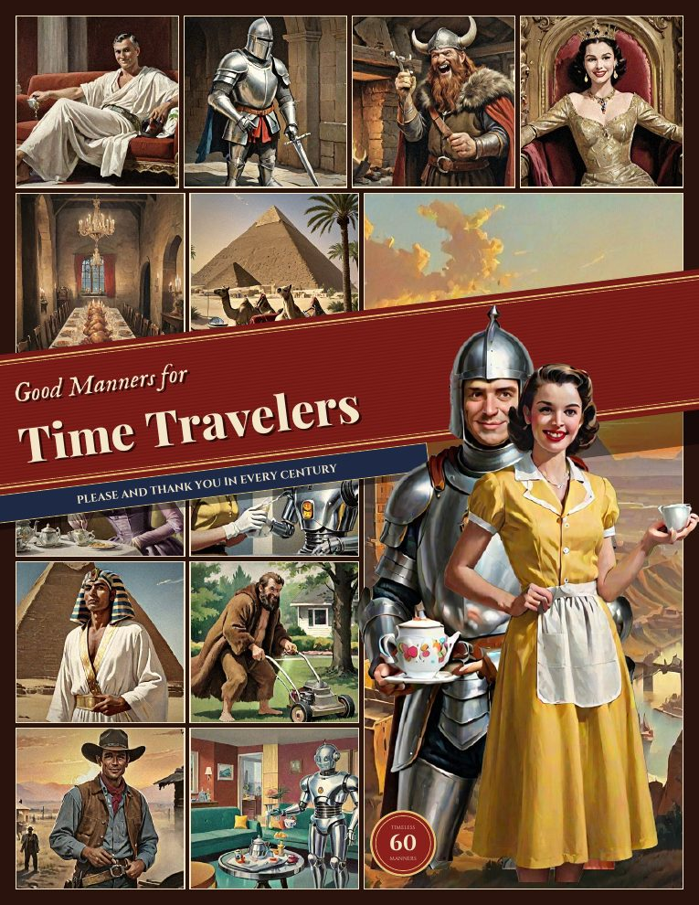
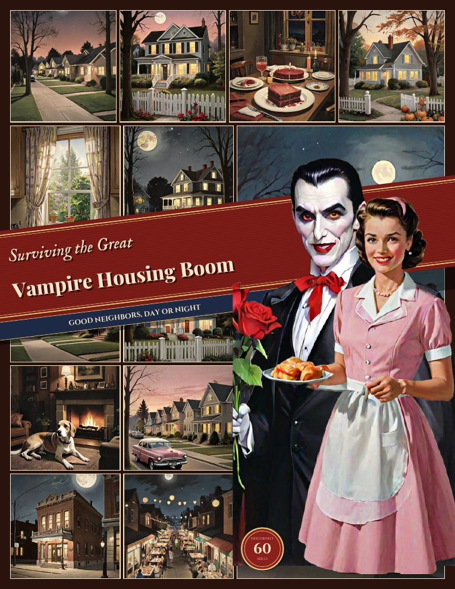

Pull one down!The Bookshelf
Every Fun Books title, old and new. Tap a spine to slide the book off the shelf and see what's inside.
Tip: swipe the shelf sideways to see every book, or use the arrow keys.
The full catalog
All the books at a glance
 On the shelf
On the shelfThe Independent Household
Self-Reliance · On the shelf
 On the shelf
On the shelfThere's a Dinosaur in the Backyard
Prehistoric Pet Care · On the shelf
 On the shelf
On the shelfHow to Survive a GOP Apocalypse
Political Comedy · On the shelf
 On the shelf
On the shelfThe Housewife's Guide to Alien Invasions
Sci-Fi Homemaking · On the shelf
 On the shelf
On the shelfEtiquette for the Robot Uprising
Atomic-Age Etiquette · On the shelf
 On the shelf
On the shelfHow to Survive the AI Apocalypse
Electronic-Brain Comedy · On the shelf
 On the shelf
On the shelfThe Gentleman's Guide to the Zombie Neighborhood
Neighborly Etiquette · On the shelf
 On the shelf
On the shelfHomemaking After the Asteroid
Crater-Age Homemaking · On the shelf
 On the shelf
On the shelfHow to Raise a Well-Behaved Bigfoot
Bigfoot Upbringing · On the shelf

On the shelfGood Manners for Time Travelers
Time-Travel Etiquette · On the shelf

On the shelfSurviving the Great Vampire Housing Boom
Neighborly Homemaking · On the shelf